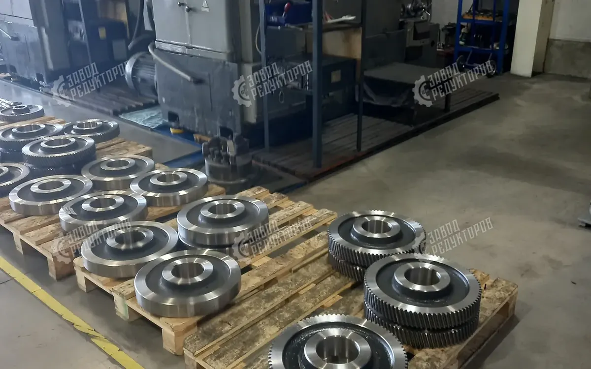

Самая частая и дорогая ошибка при покупке редуктора — заказывать его «по маркировке», без анализа реальной нагрузки. Внешне аналог подходит, но в работе выходит из строя задолго до расчётного ресурса.

Как возникает ошибка
Заказчик называет модель — поставщик предлагает «аналог по названию», не уточняя технические условия. В результате не учитываются ключевые факторы:
- фактическая мощность двигателя — и связанный с ней перегруз модели;
- наличие дополнительных ступеней и реальная кинематика привода;
- фактический крутящий момент и допустимые нагрузки в рабочем цикле.
Итог предсказуем: неправильно подобранный узел перегружается и выходит из строя — например, по лопнувшему венцу — даже при лёгкой эксплуатации.
Как мы подбираем
Результат
Корректно подобранный редуктор служит годами и работает в рамках заявленного ресурса с запасом прочности — без внеплановых замен и простоев из-за перегруза.
Это типовая задача из практики завода. Технические расчёты под ваш проект предоставляем по запросу.